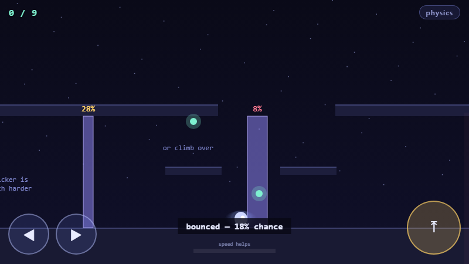
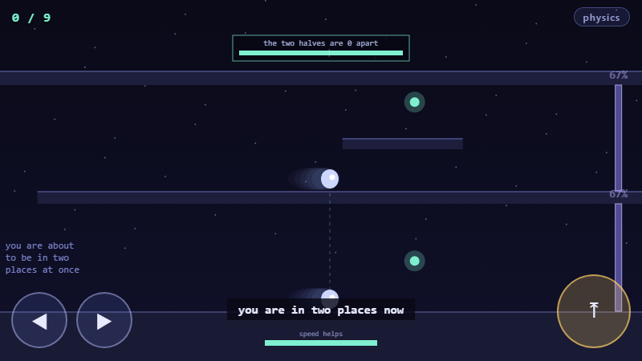

runs in any browser, phone included · about three minutes
An ordinary platformer. Run, jump, reach the light at the end. Anyone can play it in five seconds without being told anything.
The only strange thing is that you are not solid. Every wall wears a number — your chance of going straight through it. Thin walls are easy, thick walls are nearly impossible, and running faster improves your odds.
That number is not a game balance knob. It is
T = e−2κd, the real quantum tunnelling probability, with the real
exponential dependence on barrier thickness and the real dependence on your energy. Nobody is
told that while playing. They just learn, in their hands, that
a wall twice as thick is not twice as hard — it squares the odds.

| Real physics | What the player experiences |
|---|---|
Quantum tunnelling. T = e−2κd,
κ = √(2m(V−E))/ħ |
Walls have odds. Thin is easy, thick is hopeless, speed helps. Doubling thickness squares the chance |
| Measurement collapse. An observed particle has a definite position | A detector sweeps the corridor. While its light is on you, you are solid — and so are the walls. Time your run between sweeps |
| Superposition. One particle takes both paths | You become two. One set of controls, two bodies, two corridors, and both have to make it |
| Interference. The path difference decides whether amplitudes add or cancel | When your halves rejoin, a meter shows how far apart they travelled. In step, you come out bright and score; out of step, they partly cancel |
There is a physics button in the corner. Press it and every number shows its working — the formula on each wall, your energy term, the path difference in wavelengths. Ignore it and the game is unchanged. That is the whole design: play first, and the physics is underneath for anyone who goes looking.

Four builds, three of them wrong, and the wrongness is the useful part:
The test I held it to: can someone who only presses right and jump finish it? Yes — verified by script, repeatedly. And the failures that test found were real design bugs, not physics bugs: a thick wall with no way round it was a toll booth, and an interference miss used to kill you for a number you could not steer. Both are fixed.
The earlier builds are still playable, and honest about what they are: an NMR shimming trainer (a real drill — the lineshape tells you which shim is wrong), a spin sandbox on a Bloch engine verified against closed form, Agreement, and Pixel Plumber, where all of this started.
Plain HTML5 canvas, CSS and JavaScript throughout — no engine, no dependencies, no build step. Built and verified with Claude Code.